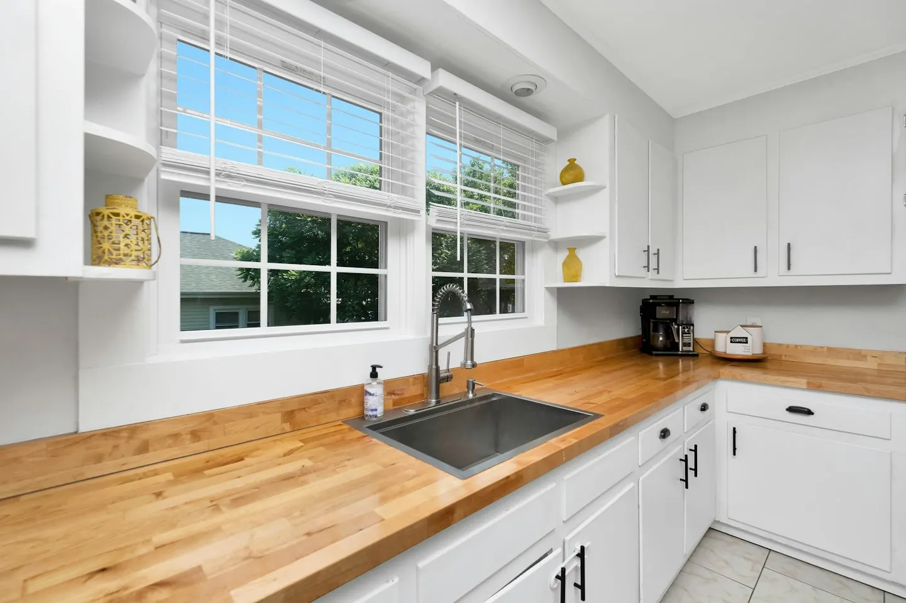
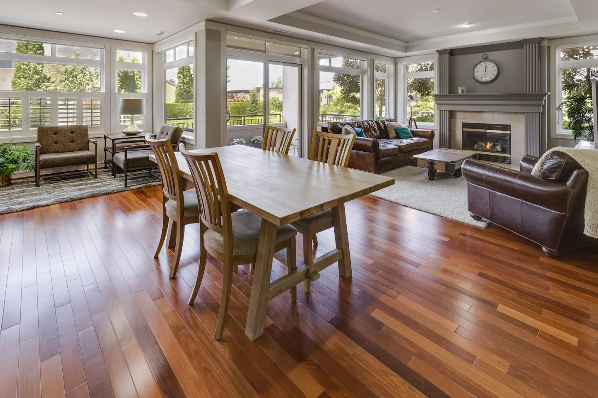
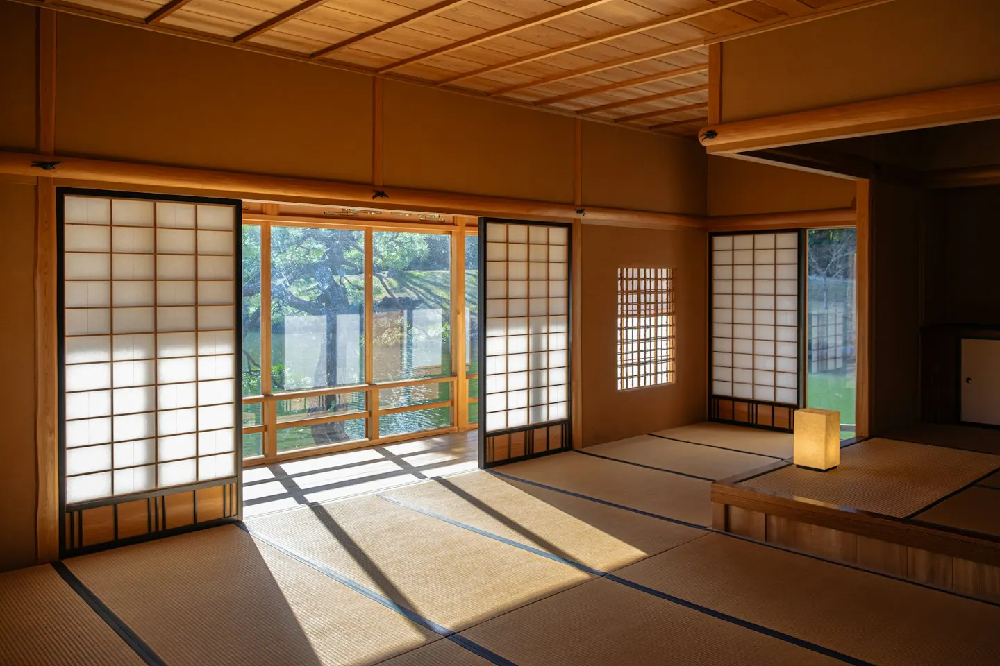
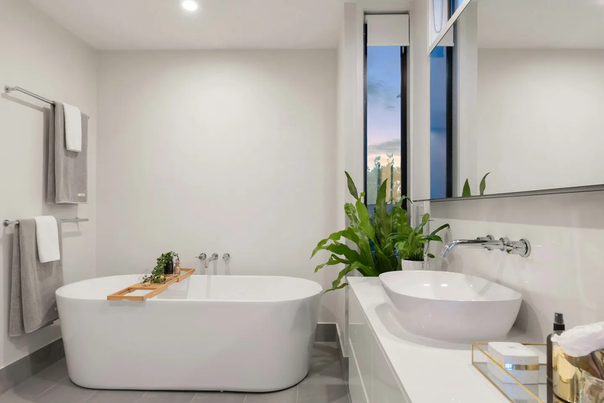
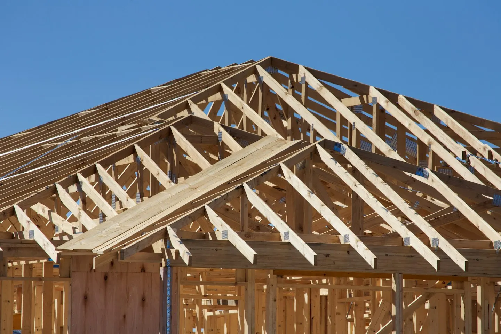
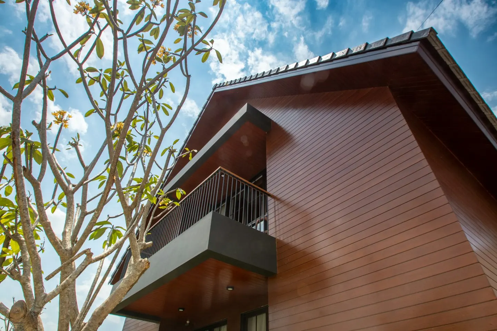
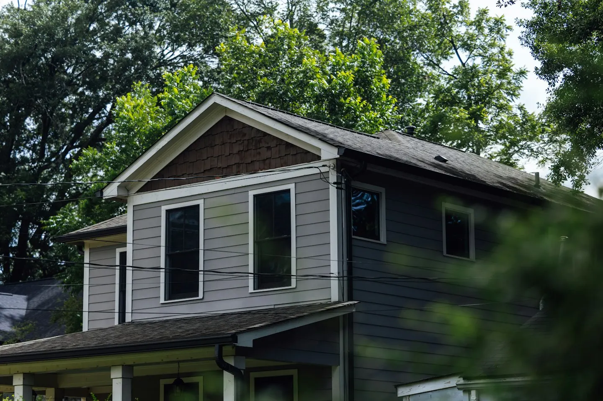
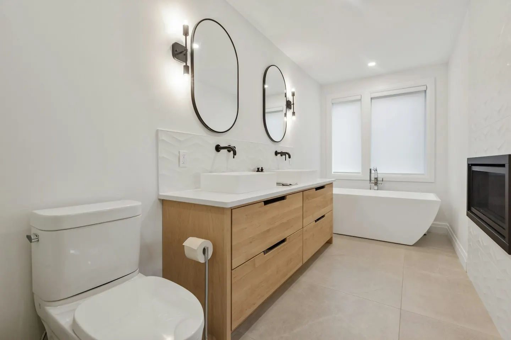

LDK
「朝ごはんのとき、庭の木が見えるといいな」
— 暮らしのご希望例
間取りへの取り入れ方ダイニングの東側に、座ったときの目線に合わせた高さ90cmの横長窓を設けるプランです。庭のヤマボウシが、朝日と一緒に見えます。
家事の動線と木の手触りを考える、注文住宅とリフォーム。
イベント・お知らせEVENT & NEWS
私たちは最初の打ち合わせで、図面を広げません。「休みの日は何をしていますか」「家でいちばん長くいる場所は」。ご家族の何気ないことばを書きとめ、それを部屋の形にしていきます。下の図の部屋を押すと、平屋の設計提案例の「ことば」と「設計の工夫」が見られます。
「朝ごはんのとき、庭の木が見えるといいな」
— 暮らしのご希望例
間取りへの取り入れ方ダイニングの東側に、座ったときの目線に合わせた高さ90cmの横長窓を設けるプランです。庭のヤマボウシが、朝日と一緒に見えます。
耐震・断熱・維持費。言葉だけでは比較しにくい項目を、図面や見積もりと一緒に確認できるように整理します。
| 構造のこと | 耐震 | 設計で目指す性能と、計算・検査で確認する内容。 |
|---|---|---|
| 室内のこと | 断熱 | 窓・壁・屋根の仕様と、部屋ごとの冷暖房計画。 |
| 費用のこと | 総額 | 建物に加え、外構・地盤調査・諸費用の範囲。 |
| 完成後のこと | 点検 | 点検の時期、相談窓口、保証の対象と条件。 |
窓の向きや家事の順番を、一日の過ごし方から検討します。写真は空間のイメージです。
7:00あさ

キッチンは東向きに。朝食をつくる時間に、手元がいちばん明るくなります。
東窓 W1,690 × H90013:00ひる

南の軒を91cm出しています。高い夏の日差しはさえぎり、低い冬の日差しは部屋の奥まで届きます。
軒の出 910mm17:30ゆうがた

西日がまぶしい畳コーナーには障子を。光をやわらげながら、部屋を明るく保ちます。
障子 手すき和紙21:00よる

浴室だけでなく脱衣所の断熱や暖房も合わせて検討。入浴前後の過ごし方まで、ご相談で確認します。
浴室・脱衣所の温熱計画
打ち合わせで決めたことは、図面と仕様書に残します。棚の高さ、コンセントの位置、木の仕上げ。現場で気になる点も、その都度確認できる進め方を大切にします。
ご希望に合わせた設計の考え方をご紹介します。施工実績ではなく、写真素材を用いた架空の提案例です。

「ベランダで星を見たい」
「料理しながら宿題を見たい」

「あと30年、この家に住みたい」

「朝の洗面所の渋滞をなくしたい」
横にスクロールできます →
見学会・相談会の掲載例です。実際の開催・予約受付はありません。
フォームの最後に、今の住まいについてのひとことを書く欄があります。「冬、脱衣所が寒い」「子ども部屋が足りない」など、短くて大丈夫です。そのことばから、ご提案を考えます。